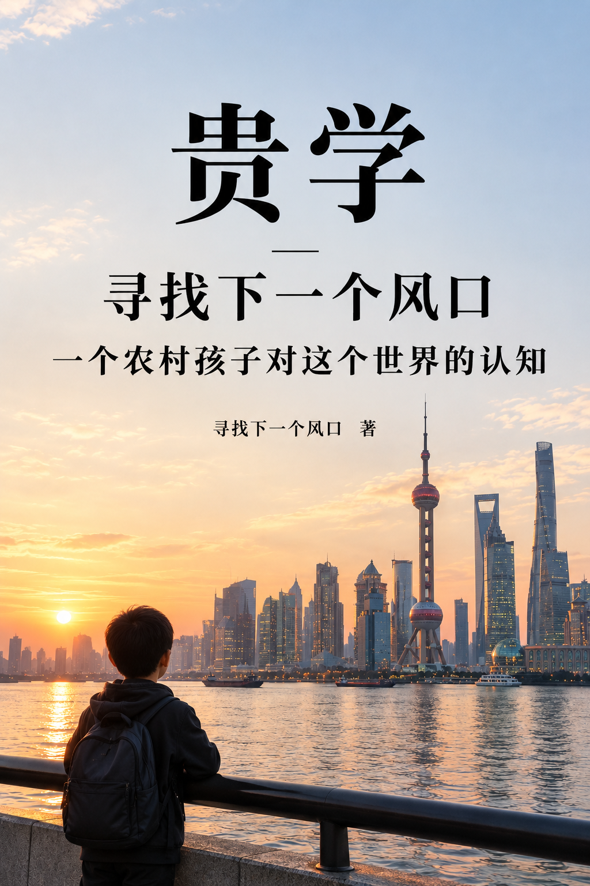

Contents
Preface
毕业以后，我去了几个地方。
石家庄，北京，雄市。
每到一个地方，我都会带着一个行李箱。
里面没有多少东西。几件换洗的衣服，一台电脑，还有一些毕业以后一直没来得及整理的东西。
剩下的，是没有被回复的简历。
大学毕业以前，我很少认真想过“找不到工作”这件事。
我以为毕业应该是一件顺理成章的事情。
拍完毕业照，收拾行李，找到工作，然后租一个房子，开始新的生活。
大家都是这么过来的。
至少以前的我，是这么认为的。
真正毕业以后，我才发现，人生并不会因为拿到一张毕业证，就自动进入下一阶段。
我开始不停地投简历。
每天打开电脑，刷新招聘网站。
新的岗位一直在出现，新的公司也一直在招人。
可那些职位和我之间，好像总隔着一点什么。
投出去的简历很多，收到的回复很少。
有时候一天过去，邮箱里什么都没有。
偶尔有面试，我会提前出门，坐很久的地铁，或者拖着行李箱坐火车去另一个城市。
到了地方以后，找到写字楼，跟着人群上楼，然后坐在一张陌生的桌子前。
他们问我学校，问专业，问成绩，问项目，问有没有实习经历。
这些问题问得很快。
我回答得也很快。
后来我渐渐熟悉了面试结束时的那句话：
“我们回去再考虑一下。”
有些时候，连这句话都没有。
走出大楼以后，我会看一眼手机。
没有新的消息。
然后继续走。
北京那家公司，是我投了很多份简历以后，唯一给我面试机会的公司。
那天我坐在面试官对面。
他翻着我的简历。
翻到教育经历的时候，他停了一下。
他说，我学历一般，没有什么工作经验，成绩也不是最好的。
他的语气很平静。
没有讽刺，也没有提高声音。
只是把那些已经写在纸上的东西，一项一项念给我听。
后来他说：
“你这样的人，到社会上也不一定能取得成功。”
我坐在那里，没有说话。
其实我有很多话想说。
我想告诉他，一个人的成绩和排名不能解释他的全部。
我想告诉他，我也不是没有努力。
我甚至想告诉他，我的右腿里有自己的组织重建的韧带。
想告诉他大学那几年，我拖着一条断掉的腿生活了半年。
想告诉他，别人正常上下楼的时候，我要扶着栏杆，一层一层地挪。
想告诉他，手术以后，我又重新学了一遍怎么走路。
可是最后，我什么都没有说。
因为我突然觉得，这些事情对于他来说，没有意义。
他看到的是我的简历。
学校、成绩、专业、经验。
至于一个人曾经怎么走到今天，没有任何一栏可以填写。
面试结束以后，我把简历装回文件夹。
走出写字楼。
北京的天很大，风很干。
我站在路边，没有马上走。
手下意识地放到了右膝上。
它还在那里。
其实在毕业以前，我已经见过一次这样的“没有答案”。
大三那年，秋天刚来的时候，我去打篮球。
那天下午状态很好。
跑动、变向、起跳，身体的每个部位都在按照自己的习惯工作。
那时候，我并不知道，一条腿可以在某一个瞬间突然不再听你的话。
场上有两个其他学院的人。
具体怎么摔倒的，我后来一直没能完全想清楚。
只记得身体撞了一下。
然后我摔在了木地板上。
我右手撑着地，试着站起来。
没有站起来。
我又试了一次。
还是没有。
右腿像突然消失了。
膝盖里面像空了一块。
我的大脑还在命令它站起来，可它已经不再执行。
那两个人看见了。
他们没有走过来。
没有问一句。
后来是一个同专业的同学把我扶到了场边。
我坐在那里，看着膝盖一点一点肿起来。
球场上的人还在打球。
篮球砸在地上，球鞋擦过木地板，还有人在喊着传球。
一切都在继续。
只有我停在那里。
第二天中午，我一个人去了医院。
医生看了看，说问题不大，休息两周就好了。
没有拍片，也没有做更多检查。
我信了。
那时候我觉得，身体这种东西，休息一段时间，总会自己好起来。
两周以后，膝盖还是肿的。
走路还是不舒服。
我又去了一次医院。
这一次拍了片。
前叉断了。
医生告诉我，需要做手术。
我给我妈打了视频电话。
我尽量用平常的语气告诉她这件事。
她在电话那头沉默了一会儿。
问我什么时候做，需要多少钱。
我说，我想做完手术以后回家养着，等考试的时候再回来。
她说，那你问问学校行不行。
我问了。
不行。
具体是什么手续，我现在已经记不清了。
我只记得，我不能走。
于是手术只能往后拖。
那条断掉的韧带，又在我的膝盖里待了半年。
那半年里，我还是照常上课。
照常去食堂。
照常回宿舍。
右腿不能跑，不能跳，也不敢真正弯下去。
上下楼梯的时候，我扶着栏杆，把重心尽量压在左腿上。
有人问我：
“你腿还没好？”
我说：
“快了。”
其实我知道，它不会自己好。
前叉断了就是断了。
可是生活不会因为你的身体出了问题，就替你按下暂停键。
课还是要上。
考试还是要考。
日子还是一天一天地过。
半年以后，我终于去做了手术。
麻醉以后，下半身慢慢失去知觉。
我躺在手术台上，意识清醒，却感觉不到自己的腿在哪里。
手术时，医生取了我自己的组织，用来重建断掉的前叉。
醒来的时候，右腿被支具固定着。
笔直，僵硬。
那是我的组织。
可那一阵子，它又不像是我的。
接下来的日子，我开始重新学走路。
以前十分钟的路，要走半个小时。
上下楼梯的时候，我经常走到一半停下来。
看着自己的右腿。
那时候我脑子里总有一个画面：
左腿踩在实处。
右腿悬在虚空里。
我想把它放下去。
却不知道下面是什么。
毕业是在夏天。
那时候我的腿已经能走路了，但还不敢完全发力。
我穿着学士服站在操场上拍照。
照片里的我笑得很正常。
没有人看得出来，站着的时候，我还是会下意识把重心放到左腿上。
拍完以后，同学们开始搬行李。
有人已经找到了工作。
有人准备继续读书。
有人去了新的城市。
我也拖着一个行李箱离开学校。
到了邯郸东站，我在人群里等车。
右手拉着行李箱。
左手下意识摸了一下右膝。
这个动作不知道什么时候已经变成了习惯。
那时候我以为，腿已经好了，大学也毕业了，接下来只是换一个地方生活。
后来才知道，真正困难的部分，恰恰从这里开始。
石家庄。
北京。
雄市。
我去了一个又一个地方。
开始的时候，我还会认真准备每一次面试。
提前很久出门，把简历检查好，再在路上想一遍可能会被问到的问题。
后来次数多了，也就没那么紧张了。
因为我慢慢知道，大多数面试并不会改变什么。
有一次，石家庄一家小公司的老板和我聊了没多久，就说：
“我们这儿庙小，容不下你这样的人。”
我从那家公司出来以后，在门口站了一会儿。
我不知道他说得对不对。
也许我的语气确实有问题。
也许我的表情让人觉得我待不住。
也许我身上确实有一点自己没有察觉到的傲气。
我后来也想过，是不是我要求得太多。
可是再想想，好像也没有谁真的错。
他需要的是一个适合这家公司的人。
而我还在找一个自己愿意留下来的地方。
这两件事刚好没有碰上。
就这么简单。
可这些拒绝加在一起的时候，人还是会怀疑自己。
是不是我真的不够好。
是不是别人说的都对。
是不是大学四年过去，我最后还是只剩下一张不够好看的简历。
这些问题，我现在都没有答案。
现在我在雄市。
一个朋友租了合租房，我暂时住在他那里。
晚上，我们两个人睡一张床。
床不算大。
翻身的时候，总要小心一点。
他很少问我工作怎么样。
早上他出门上班以后，屋子里就只剩下我一个人。
我坐在床边，打开电脑。
招聘网站还在不停更新。
新的岗位不断出现。
我还是会投。
投完以后，再等消息。
有时候一个星期都没有新的面试。
有时候会突然接到一个电话。
聊专业，聊学校，聊工资。
聊完以后，对方说：
“我们考虑一下。”
我已经知道这句话后面通常意味着什么。
下午饿了，我会自己做饭。
切土豆丝，放油，看着它们在锅里一点一点变黄。
有时候炒得久了一点，边缘会变焦。
我端出来，一个人吃。
桌上有朋友的水杯、抹布，还有一些他的东西。
都是很普通的东西。
普通到让我越来越清楚，这里是他的生活。
而我只是暂时住进来的人。
朋友对我很好。
好到有时候，我不知道该怎么还。
他不会催我，也不会问我什么时候离开。
有时候晚上回来，他会把门关得很轻。
有时候买了水果放在桌上，也不叫我。
我后来自己拿一个。
有一天晚上，我们两个人躺在床上。
电视开着。
谁也没有认真看。
我们也没有说话。
房间里很安静。
但我知道他在。
那一刻我突然觉得，一个人愿意在自己已经不算宽敞的生活里，再给另一个人留出一点位置，这件事本身就已经很好了。
也正因为这样，我才更想赶紧找到工作。
赶紧租一间自己的房子。
赶紧拥有自己的生活。
不是因为这里不好。
恰恰是因为这里太好了。
我不想一直借住在别人的生活里。
毕业以后，我开始重新理解很多以前习以为常的东西。
以前我觉得，很多事情应该有一个明确的结果。
考研成功或者失败。
找到工作或者找不到。
留在北京或者离开。
成功或者不成功。
好像人生最后总会有人告诉你，你现在到底处于什么位置。
可真正毕业以后，我越来越不知道应该怎么判断这些事情。
有人一毕业就有工作。
有人找了很久。
有人留在大城市。
有人回了家。
有人很早就知道自己想要什么。
也有人到了二十几岁，还是不知道。
我不知道自己现在算不算失败。
也不知道什么时候才能真正站稳。
甚至不知道几年以后回头看今天，会不会觉得现在的这些事情其实没有那么严重。
这些问题，我都没有答案。
以前我不太能接受“没有答案”这件事。
总觉得只要努力够多，总会得到一个结果。
后来才慢慢明白，有些时候不是你不够努力。
只是事情本身还没有走到可以回答的时候。
我有时候还是会想起那条右腿。
想起那个篮球场。
想起自己躺在那里，一次又一次试着站起来。
也会想起后来扶着栏杆下楼。
左腿踩在实处。
右腿悬在虚空里。
那时候我以为，只要把手术做完，只要腿恢复，就算过去了。
现在才知道，人身上有些东西不会随着伤口愈合就消失。
它们会留下来。
变成一些很小的习惯。
比如下楼的时候，下意识扶一下栏杆。
比如坐久以后，先活动一下右腿。
比如站着的时候，还是会习惯性地把重心放到左边。
有些经历也是这样。
它们不会一直疼。
但会留下来。
提醒你自己曾经怎样走过来。
现在的我，还是不知道下一份工作在哪里。
不知道自己会留在哪个城市。
不知道什么时候能够真正拥有一个属于自己的房间。
甚至不知道几年以后，自己会变成什么样的人。
以前我总想尽快得到答案。
现在没有那么着急了。
不是因为我已经想明白了。
而是因为我开始接受，有些答案，本来就不应该这么早出现。
我能做的，好像也只有把今天过完。
继续投简历。
继续坐车。
继续做饭。
继续面对那些没有回复的消息。
继续生活。
有时候，我也会怀疑自己是不是走得太慢了。
但我后来想起那条右腿。
它曾经断过。
也曾经很长一段时间无法正常工作。
最后它还是一点一点恢复了。
没有突然变好。
也没有某一天醒来以后，一切恢复成从前。
只是一天一天地练。
一步一步地走。
走得慢一些。
也没关系。
现在右腿还是有些僵。
走快了会酸。
坐久了也会不舒服。
它没有恢复成从前的样子。
也许以后也不会。
可它已经可以带着我走很远了。
今天早上，朋友起床以后先去上班。
我坐在床边醒了一会儿。
打开电脑。
招聘网站上没有新的消息。
我关掉电脑。
站起来。
右腿有一点酸。
我还是出了门。
我不知道接下来会去哪儿。
也不知道什么时候才能真正找到自己的位置。
我只是还没有答案。
但这一次，我没有停下来。
第一辑 钱与认知
一个人什么时候能够学会成长？当你把钱看作身外之物的时候。因为钱会阻碍你下定决心，阻碍你去做一定的决定。
（正文样章，其余内容略）
第一辑 钱与认知
给普通人一个建议：普通人的建议不要听，非普通人的建议也不要听——人家没必要教给你真本事。
第一辑 钱与认知
与其说是认知决定收入，倒不如说是道德决定收入。如果你单纯从事体力劳动，那收入高没得说；但如果你不从事体力劳动，然后收入也不低，那……
第二辑 决策与时间
贵学的基础理论：遇到难以抉择的事情，可采取以下方法——1. 向下兼容（这是本人最不建议采取的方式方法）；2. 转型；3. 扩大再生产。
第二辑 决策与时间
“来日方长”说的是：以后还有时间，还有机会，不必急于一时。它像一句温柔的宽慰，但它的力量寄托在“来日”上。问题是，来日并不一定方长，人生常有意外和错过。它有时还会变成拖延的借口：今天不做的，以后再说；现在不见的，以后再见。
第二辑 决策与时间
贵学的基本概念：回忆过去，远不如展望未来。
第三辑 工作与职场
我觉得上班还是挺锻炼人的。如果是高工资，它能让不正常的人变成正常人；如果是低工资，它能让正常人变成不正常的人。
第三辑 工作与职场
工作上，就算你有天大的功劳，说实话，也没有人会对你感恩戴德，都觉得是理所应当。
第三辑 工作与职场
我觉得，提升一个人最大的方式或者途径，就是干中学。但现在，干中学的门槛被极大地提高了。
为什么这么说？
因为很多能力，你只有真正去做，才能逐渐掌握。但问题在于，今天的很多事情，并不是你想做就能做的。
你想进入一个行业，别人要求你有经验；你想获得经验，却没有进入这个行业的机会。你想通过实践提升自己，却发现实践本身已经成了一种需要争取的资源。
这就是如今干中学面临的困境。
而且，我认为这个问题很难解决。
因为机会本身就是有限的。别人没有义务为你的成长承担成本，你也不可能要求所有人都给你机会。你可以抱怨这种现象不合理，但抱怨并不能让你获得经验；你也可以继续学习理论知识，但如果始终没有实践的机会，你的能力提升终究会受到限制。
既然如此，对于一个普通人来说，真正重要的问题就不是如何消除所有门槛，而是如何让自己进入干中学。
我认为，首先要改变的是自己的思路。
很多人想学会一项技能，首先想到的是学习。他们会问，应该看什么书、学什么课程、掌握哪些知识。
这些当然有用，但还有一个问题：你什么时候才能真正开始做？
你不能永远等到自己准备充分了再行动，因为你根本不知道，自己距离所谓的准备充分还有多远。很多知识，只有在真正遇到问题的时候，你才知道它的重要性；很多能力，只有在自己动手之后，你才知道差距在哪里。
所以，与其一直想着怎样把自己准备得更好，不如想办法让自己尽早进入真实的实践之中。
这里的关键，是不要把进入干中学的条件想得过于理想。
你未必一开始就能进入理想的公司，获得理想的岗位，或者找到一个愿意从头培养你的人。如果你把这些当成实践的前提，那么你很可能会因为迟迟等不到机会，而一直停留在原地。
你需要做的，是寻找自己能够进入的地方。它不一定足够体面，也不一定能带来多大的回报，但至少应该让你接触真实的问题，让你的行动产生真实的结果，并且让你有机会知道自己做得对不对。
当然，这不是说所有事情都值得去做。单纯地忙碌，不等于干中学；重复劳动，如果没有思考、反馈和能力积累，也未必能够让人进步。
真正重要的是，每做一件事，都尽可能弄清楚三个问题：我解决了什么问题？我在哪个环节做得不好？下一次我能不能做得更好？
当你开始这样做的时候，你就不再只是等待别人教你，而是在主动从实践中获取经验。
我知道，这依然不能保证一个人一定能够获得机会。有些门槛确实很高，有些资源确实不是个人努力就能得到的。但承认现实的困难，不代表我们只能停留在困难面前。
既然干中学的入口越来越难找，那么找到入口本身，就应该成为我们需要学习的一项能力。
不要只研究怎样提升自己的能力，还要研究怎样获得使用这种能力的机会；不要只关心自己还缺少什么，也要看看自己现在能做什么，能够从哪里开始。
对于一个暂时缺少资源、经验和机会的人来说，这或许比继续等待一个完美的机会更加重要。
因为干中学最困难的地方，有时不是开始之后如何学会，而是在开始之前，如何找到一个让自己真正做起来的入口。
而一旦进入了实践，哪怕起点很低，你至少拥有了一个可以不断试错、修正和积累经验的地方。
所以，我认为，干中学依然是提升自己的重要途径。但在今天，我们还需要多想一步：如何让自己进入干中学。
这件事很难，却比站在门外反复讨论门槛有意义得多。
第四辑 生存与生活
流浪这几天，我发现了一件事情：生存成本低，不需要买房子，可以睡公园的长椅。但有一个问题，公园的长椅太短了。而通勤需求不大，不需要买车。
第四辑 生存与生活
老是有人问，每天找工作资金消耗大怎么办？统一回复了：早上就去公园锻炼身体；上午热了，就去商场吹空调；中午饿了，就去试吃；下午有太阳，就去树下边吹会儿自然风；晚上继续试吃；睡觉就去 ICBC 24 小时取款机那里睡。记住，晚点去，早点走。
第五辑 处世与人性
明白了一个道理：我们都需要忍耐，韬光养晦。
第五辑 处世与人性
最近有所感悟：越自卑、越无能的人，脾气越大。这样的人，我们要远离。
第五辑 处世与人性
贵学的核心宗旨就是：迅速与无功能性的人切割，不要优柔寡断，拖泥带水。
Afterword
贵学，就是本人的书。它是一个农村孩子对这个世界的认知。